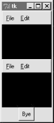

| I l@ve RuBoard |
|
8.2 MenusMenus are the pull-down lists you're accustomed to seeing at the top of a window (or the entire display, if you're accustomed to seeing them on a Macintosh). Move the mouse cursor to the menu bar at the top, click on a name (e.g., File), and a list of selectable options pops up under the name you clicked (e.g., Open, Save). The options within a menu might trigger actions, much like clicking on a button; they may also open other "cascading" submenus that list more options, pop-up dialog windows, and so on. In Tkinter, there are two kinds of menus you can add to your scripts: top-level window menus and frame-based menus. The former option is better suited to whole windows, but the latter also works as a nested component. 8.2.1 Top-Level Window MenusIn more recent Python releases (using Tk 8.0 and beyond), you can associate a horizontal menu bar with a top-level window object (e.g., a Tk or Toplevel). On Windows and Unix (X Windows), this menu bar is displayed along the top of the window; on Macintosh, this menu replaces the one shown at the top of the screen when the window is selected. In other words, window menus look like you would expect on whatever underlying platform your script runs upon. This scheme is based on building trees of Menu widget objects. Simply associate one top-level Menu with the window, add other pull-down Menu objects as cascades of the top-level Menu, and add entries to each of the pull-downs. Menus are cross-linked with the next higher level, by using parent widget arguments and the Menu widget's add_cascade method. It works like this:
The end result is a tree of Menu widgets with associated command callback handlers. This is all probably simpler in code than in words, though. Example 8-1 makes a main menu with two pull-downs, File and Edit; the Edit pull-down in turn has a nested submenu of its own. Example 8-1. PP2E\Gui\Tour\menu_win.py# Tk8.0 style top-level window menus
from Tkinter import * # get widget classes
from tkMessageBox import * # get standard dialogs
def notdone():
showerror('Not implemented', 'Not yet available')
def makemenu(win):
top = Menu(win) # win=top-level window
win.config(menu=top) # set its menu option
file = Menu(top)
file.add_command(label='New...', command=notdone, underline=0)
file.add_command(label='Open...', command=notdone, underline=0)
file.add_command(label='Quit', command=win.quit, underline=0)
top.add_cascade(label='File', menu=file, underline=0)
edit = Menu(top, tearoff=0)
edit.add_command(label='Cut', command=notdone, underline=0)
edit.add_command(label='Paste', command=notdone, underline=0)
edit.add_separator()
top.add_cascade(label='Edit', menu=edit, underline=0)
submenu = Menu(edit, tearoff=0)
submenu.add_command(label='Spam', command=win.quit, underline=0)
submenu.add_command(label='Eggs', command=notdone, underline=0)
edit.add_cascade(label='Stuff', menu=submenu, underline=0)
if __name__ == '__main__':
root = Tk() # or Toplevel()
root.title('menu_win') # set window-mgr info
makemenu(root) # associate a menu bar
msg = Label(root, text='Window menu basics') # add something below
msg.pack(expand=YES, fill=BOTH)
msg.config(relief=SUNKEN, width=40, height=7, bg='beige')
root.mainloop()
There is a lot of code in this file devoted to setting callbacks and such, so it might help to isolate the bits involved with the menu tree building process. For the File menu, it's done like this: top = Menu(win) # attach Menu to window win.config(menu=top) # cross-link window to menu file = Menu(top) # attach a Menu to top Menu top.add_cascade(label='File', menu=file) # cross-link parent to child Apart from building up the menu object tree, this script also demonstrates some of the most common menu configuration options:
Let's see what all this translates to in the realm of the pixel. Figure 8-1 shows the window that first appears when this script is run live on Windows; it looks different, but similar, on Unix and Macintosh. Figure 8-1. menu_win: a top-level window menu barFigure 8-2 shows the scene when the File pull-down is selected. Notice that Menu widgets are linked, not packed (or gridded) -- the geometry manager doesn't really come into play here. If you run this script, you'll also notice that all of its menu entries either quit the program immediately or pop up a "Not Implemented" standard error dialog. This example is about menus, after all, but menu selection callback handlers generally do more useful work in practice. Figure 8-2. The File menu pull-downAnd finally, Figure 8-3 shows what happens after clicking the File menu's tear-off line and selecting the cascading submenu in the Edit pull-down. Cascades can be nested as deep as you like, but your users probably won't be happy if this gets silly. Figure 8-3. A File tear-off and Edit cascadeIn Tkinter, every top-level window can have a menu bar, including pop-ups that you create with the Toplevel widget. Example 8-2 makes three pop-up windows with the same menu bar as the one we just met; when run, it constructs the scene captured in Figure 8-4. Example 8-2. PP2E\Gui\Tour\menu_win-multi.pyfrom menu_win import makemenu
from Tkinter import *
root = Tk()
for i in range(3): # 3 popup windows with menus
win = Toplevel(root)
makemenu(win)
Label(win, bg='black', height=5, width=15).pack(expand=YES, fill=BOTH)
Button(root, text="Bye", command=root.quit).pack()
root.mainloop()
Figure 8-4. Multiple Toplevels with menus8.2.2 Frame- and Menubutton-Based MenusAlthough less commonly used for top-level windows, it's also possible to create a menu bar as a horizontal Frame. Before I show you how, though, let me explain why you should care. Because this frame-based scheme doesn't depend on top-level window protocols, it can also be used to add menus as nested components of larger displays. In other words, it's not just for top-level windows. For example, Chapter 9's PyEdit text editor can be used both as a program and an attachable component. We'll use window menus to implement PyEdit selections when it is run as a standalone program, but use frame-based menus when PyEdit is embedded in the PyMail and PyView displays. Both schemes are worth knowing. Frame-based menus require a few more lines of code, but aren't much more complex than window menus. To make one, simply pack Menubutton widgets within a Frame container, associate Menu widgets with the Menubuttons, and associate the Frame with the top of a container window. Example 8-3 creates the same menu as Example 8-2, but using the frame-based approach. Example 8-3. PP2E\Gui\Tour\menu_frm.py# Frame-based menus: for top-levels and components
from Tkinter import * # get widget classes
from tkMessageBox import * # get standard dialogs
def notdone():
showerror('Not implemented', 'Not yet available')
def makemenu(parent):
menubar = Frame(parent) # relief=RAISED, bd=2...
menubar.pack(side=TOP, fill=X)
fbutton = Menubutton(menubar, text='File', underline=0)
fbutton.pack(side=LEFT)
file = Menu(fbutton)
file.add_command(label='New...', command=notdone, underline=0)
file.add_command(label='Open...', command=notdone, underline=0)
file.add_command(label='Quit', command=parent.quit, underline=0)
fbutton.config(menu=file)
ebutton = Menubutton(menubar, text='Edit', underline=0)
ebutton.pack(side=LEFT)
edit = Menu(ebutton, tearoff=0)
edit.add_command(label='Cut', command=notdone, underline=0)
edit.add_command(label='Paste', command=notdone, underline=0)
edit.add_separator()
ebutton.config(menu=edit)
submenu = Menu(edit, tearoff=0)
submenu.add_command(label='Spam', command=parent.quit, underline=0)
submenu.add_command(label='Eggs', command=notdone, underline=0)
edit.add_cascade(label='Stuff', menu=submenu, underline=0)
return menubar
if __name__ == '__main__':
root = Tk() # or TopLevel or Frame
root.title('menu_frm') # set window-mgr info
makemenu(root) # associate a menu bar
msg = Label(root, text='Frame menu basics') # add something below
msg.pack(expand=YES, fill=BOTH)
msg.config(relief=SUNKEN, width=40, height=7, bg='beige')
root.mainloop()
Again, let's isolate the linkage logic here to avoid getting distracted by other details. For the File menu case, here is what this boils down to: menubar = Frame(parent) # make a Frame for the menubar fbutton = Menubutton(menubar, text='File') # attach a MenuButton to Frame file = Menu(fbutton) # attach a Menu to MenuButton fbutton.config(menu=file) # crosslink button to menu There is an extra Menubutton widget in this scheme, but it's not much more complex than making top-level window menus. Figures Figure 8-5 and Figure 8-6 show this script in action on Windows. Figure 8-5. menu_frm: Frame and Menubutton menu barFigure 8-6. With the Edit menu selected The menu widgets in this script provide a default set of event bindings that automatically pop up menus when selected with a mouse. This doesn't look or behave exactly like the top-level window menu scheme shown earlier, but it is close, can be configured in any way that frames can (i.e., with colors and borders), and will look similar on every platform (though this is probably not a feature). The biggest advantage of frame-based menu bars, though, is that they can also be attached as nested components in larger displays. Example 8-4 and its resulting interface (Figure 8-7) show how. Example 8-4. PP2E\Gui\Tour\menu_frm-multi.pyfrom menu_frm import makemenu # can't use menu_win here--one window
from Tkinter import * # but can attach from menus to windows
root = Tk()
for i in range(2): # 2 menus nested in one window
mnu = makemenu(root)
mnu.config(bd=2, relief=RAISED)
Label(root, bg='black', height=5, width=15).pack(expand=YES, fill=BOTH)
Button(root, text="Bye", command=root.quit).pack()
root.mainloop()
Figure 8-7. Multiple Frame menus on one windowBecause they are not tied to the enclosing window, frame-based menus can also be used as part of another attachable component's widget package. For example, the menu embedding behavior in Example 8-5 even works if the menu's parent is another Frame container, not the top-level window. Example 8-5. PP2E\Gui\Tour\menu_frm-multi2.pyfrom menu_frm import makemenu # can't use menu_win here--root=Frame
from Tkinter import *
root = Tk()
for i in range(3): # 3 menus nested in the containers
frm = Frame()
mnu = makemenu(frm)
mnu.config(bd=2, relief=RAISED)
frm.pack(expand=YES, fill=BOTH)
Label(frm, bg='black', height=5, width=15).pack(expand=YES, fill=BOTH)
Button(root, text="Bye", command=root.quit).pack()
root.mainloop()
8.2.2.1 Using Menubuttons and OptionmenusIn fact, menus based on Menubutton are even more general than Example 8-3 implies -- they can actually show up anywhere on a display that normal buttons can, not just within a menubar Frame. Example 8-6 makes a Menubutton pull-down list that simply shows up by itself, attached to the root window; Figure 8-8 shows the GUI it produces. Example 8-6. PP2E\Gui\Tour\mbutton.pyfrom Tkinter import * root = Tk() mbutton = Menubutton(root, text='Food') # the pull-down stands alone picks = Menu(mbutton) mbutton.config(menu=picks) picks.add_command(label='spam', command=root.quit) picks.add_command(label='eggs', command=root.quit) picks.add_command(label='bacon', command=root.quit) mbutton.pack() mbutton.config(bg='white', bd=4, relief=RAISED) root.mainloop() Figure 8-8. A Menubutton all by itselfThe related Tkinter Optionmenu widget displays an item selected from a pull-down menu. It's roughly like a Menubutton plus a display label, and displays a menu of choices when clicked; but you must link Tkinter variables (described in Chapter 7) to fetch the choice after the fact instead of registering callbacks, and menu entries are passed as arguments in the widget constructor call after the variable. Example 8-7 illustrates typical Optionmenu usage, and builds the interface captured in Figure 8-9. Clicking on either of the first two buttons opens a pull-down menu of options; clicking on the third "state" button fetches and prints the current values displayed in the first two. Example 8-7. PP2E\Gui\Tour\optionmenu.pyfrom Tkinter import *
root = Tk()
var1 = StringVar()
var2 = StringVar()
opt1 = OptionMenu(root, var1, 'spam', 'eggs', 'toast') # like Menubutton
opt2 = OptionMenu(root, var2, 'ham', 'bacon', 'sausage') # but shows choice
opt1.pack(fill=X)
opt2.pack(fill=X)
var1.set('spam')
var2.set('ham')
def state(): print var1.get(), var2.get() # linked variables
Button(root, command=state, text='state').pack()
root.mainloop()
Figure 8-9. An Optionmenu at workThere are other menu-related topics that we'll skip here in the interest of space. For instance, scripts can add entries to system menus, and generate pop-up menus (posted in response to events, without an associated button). Refer to Tk and Tkinter resources for more details on this front. In addition to simple selections and cascades, menus can also contain disabled entries, checkbutton and radiobutton selections, and bitmap and photo images. The next section demonstrates how some of these special menu entries are programmed. 8.2.3 Windows with Both Menus and ToolbarsBesides showing a menu at the top, it is common for windows to display a row of buttons at the bottom. This bottom button row is usually called a toolbar, and often contains shortcuts to items also available in the menus at the top. It's easy to add a toolbar to windows in Tkinter -- simply pack buttons (and other kinds of widgets) into a frame, pack the frame on the bottom of the window, and set it to expand horizontally only. This is really just hierarchical GUI layout at work again, but make sure to pack toolbars (and frame-based menu bars) early, so that other widgets in the middle of the display are clipped first when the window shrinks. Example 8-8 shows one way to go about adding a toolbar to a window. It also demonstrates how to add photo images in menu entries (set the image attribute to PhotoImage object), and how to disable entries and give them a grayed-out appearance (call the menu entryconfig method with the index of the item to disable, starting from 1). Notice that PhotoImage objects are saved as a list; remember, unlike other widgets, these go away if you don't hold onto them. Example 8-8. PP2E\Gui\Tour\menuDemo.py#!/usr/local/bin/python
#########################################################################
# Tk8.0 style main window menus
# menu/tool bars packed before middle, fill=X (pack first=clip last);
# adds photos menu entries; see also: add_checkbutton, add_radiobutton
#########################################################################
from Tkinter import * # get widget classes
from tkMessageBox import * # get standard dialogs
class NewMenuDemo(Frame): # an extended frame
def __init__(self, parent=None): # attach to top-level?
Frame.__init__(self, parent) # do superclass init
self.pack(expand=YES, fill=BOTH)
self.createWidgets() # attach frames/widgets
self.master.title("Toolbars and Menus") # set window-manager info
self.master.iconname("tkpython") # label when iconified
def createWidgets(self):
self.makeMenuBar()
self.makeToolBar()
L = Label(self, text='Menu and Toolbar Demo')
L.config(relief=SUNKEN, width=40, height=10, bg='white')
L.pack(expand=YES, fill=BOTH)
def makeToolBar(self):
toolbar = Frame(self, cursor='hand2', relief=SUNKEN, bd=2)
toolbar.pack(side=BOTTOM, fill=X)
Button(toolbar, text='Quit', command=self.quit ).pack(side=RIGHT)
Button(toolbar, text='Hello', command=self.greeting).pack(side=LEFT)
def makeMenuBar(self):
self.menubar = Menu(self.master)
self.master.config(menu=self.menubar) # master=top-level window
self.fileMenu()
self.editMenu()
self.imageMenu()
def fileMenu(self):
pulldown = Menu(self.menubar)
pulldown.add_command(label='Open...', command=self.notdone)
pulldown.add_command(label='Quit', command=self.quit)
self.menubar.add_cascade(label='File', underline=0, menu=pulldown)
def editMenu(self):
pulldown = Menu(self.menubar)
pulldown.add_command(label='Paste', command=self.notdone)
pulldown.add_command(label='Spam', command=self.greeting)
pulldown.add_separator()
pulldown.add_command(label='Delete', command=self.greeting)
pulldown.entryconfig(4, state=DISABLED)
self.menubar.add_cascade(label='Edit', underline=0, menu=pulldown)
def imageMenu(self):
photoFiles = ('guido.gif', 'pythonPowered.gif', 'ppython_sm_ad.gif')
pulldown = Menu(self.menubar)
self.photoObjs = []
for file in photoFiles:
img = PhotoImage(file='../gifs/' + file)
pulldown.add_command(image=img, command=self.notdone)
self.photoObjs.append(img) # keep a reference
self.menubar.add_cascade(label='Image', underline=0, menu=pulldown)
def greeting(self):
showinfo('greeting', 'Greetings')
def notdone(self):
showerror('Not implemented', 'Not yet available')
def quit(self):
if askyesno('Verify quit', 'Are you sure you want to quit?'):
Frame.quit(self)
if __name__ == '__main__': NewMenuDemo().mainloop() # if I'm run as a script
Figure 8-10. menuDemo: menus and toolbarsWhen run, this script generates the scene in Figure 8-10 at first. Figure 8-11 shows this window after being stretched a bit, with its File and Edit menus torn off, and its Image menu selected. That's Python creator Guido van Rossum in this script's third menu (wearing his now-deprecated eyeglasses). Run this on your own computer to get a better feel for its behavior.[1]
Figure 8-11. Images and tear-offs on the job8.2.3.1 Automating menu constructionMenus are a powerful Tkinter interface device. If you're like me, though, the examples in this section probably seem like a lot of work. Menu construction can be both code-intensive and error-prone if done by calling Tkinter methods directly. A better approach might automatically build and link up menus from a higher-level description of their contents. In fact, we will -- in Chapter 9, we'll meet a tool called GuiMixin that automates the menu construction process, given a data structure that contains all menus desired. As an added bonus, it supports both window and frame-style menus, so it can be used by both standalone programs and nested components. Although it's important to know the underlying calls used to make menus, you don't necessarily have to remember them for long. |
| I l@ve RuBoard |
|